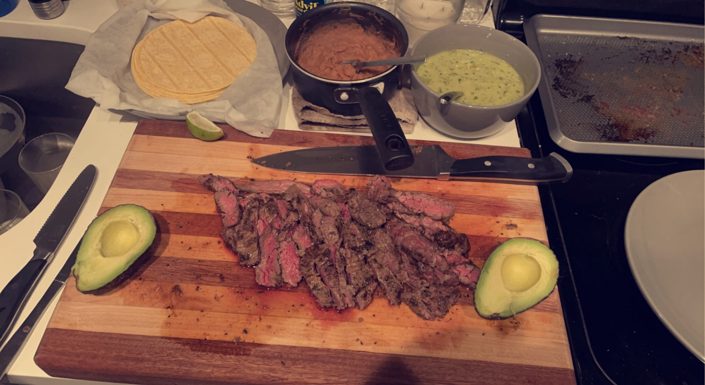

Go Back
Carne Asada

Buy some cheap skirt steak, blend up a nice marinade, chef it up and serve it to your
favorite people. If you combine this recipe with the Salsa Verde you can't lose. If you're overwhelmed by the ingredients list, dont be afraid to replace or substitute. The marinade
does not need to be perfect. You just need some citrus and veggies to give it a flavor boost.
Ingredients
The Marinade
- 1 Skirt Steak (Hangar steak too)
- 2 Jalapenos
- 1 Yellow Onion and 1 Tomato
- One Can of Beer
- 1/3 cup of orange juice
- Juice of 1 lime
- 5 cloves of garlic
- Chili Powder
- Cilantro
The Optional Ingredients
- Tortillas (corn or flour)
- Limes (for garnish)
- Avocado (if you want)
- Beans of some sort
Creation
- Broil your tomato, jalapeno, and onion in the oven until cooked and slightly charred..
- Combine all the ingredients for the marinade in a blender or food processor and purée.(please be careful with the beer)
- Rub the marinade on the steak and store for at least overnight
- Cook quickly on a grill or on a cast iron pan and sear till medium rare.
Note: This recipe was pulled from Roy Choi, a notable LA food truck chef that
inspired the movie CHEF. His recipes blend LA style cuisine with traditional korean spices and
marinades. If you enjoy this recipe please watch the chef show on netflix to find more
recipes and learn some new cooking tips and tricks.